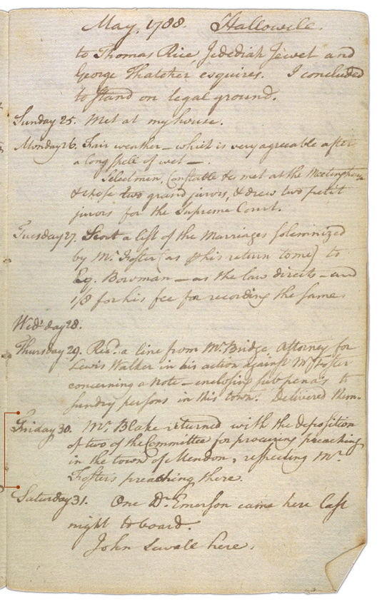

The Official Story
Chapter 4
More suits and countersuits
Henry Sewall appealed to the higher court in Pownalboro. When he was denied a continuance, he finally paid the fine to Foster.The Sewalls then took Foster to court.
Henry Sewall's diary entries for April 26 and May 1, 1788 show that Henry's cousin Thomas Sewall, who'd rented a house to the Fosters, sued Isaac Foster for back rent. He won the case and collected three shillings plus costs.
Again, the situation escalated. Take a look at Henry Sewall's diary eight days after Thomas Sewall won his case. You can see that Isaac Foster turned around and sued Henry and Thomas Sewall for defamation -- for a second time. This time, Henry paid a Mr. Blake three dollars and two thousand wooden shingles "to procure evidence against Mr. Foster.". Several weeks later, Mr. Blake returned with depositions
| What did Martha have to say about these suits? |

| previous |
Foster sues the Sewalls | |
| next |
The Rev. Mr. Foster's relation with the town was steadily deteriorating... |
| Henry Sewall's Diary Sewall, Henry 1776 - 1842 |
View Text View Frames version |
|
|
||
|
 |
||